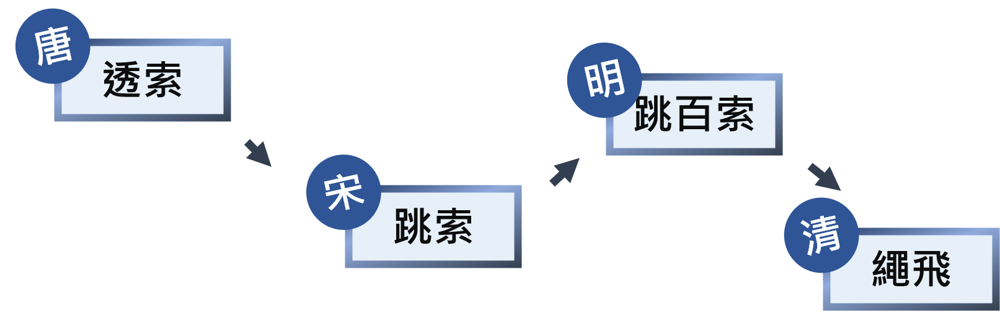

-跳繩的歷史簡介-
．古時候，繩子常常被用來綑綁農作物、驅使家畜......
．活用繩子的話，它還可以變成一項運動 - 跳繩
．跳繩的歷史已有1000年的歷史
．現今的跳繩發展出單人、雙人、團體的花式或計次
．結合律動、優美的動作、輕快的背景音樂還可以化為遊戲或是比賽
-跳繩在各個時代的名稱-

-有關跳繩的歷史文獻-
．清代《樂陵縣志》載：「元宵期間，女子以跳繩為戲，名曰跳百索。」
．《帝京景物略》中記載：「二童子引索略地，如白光輪，一童子跳光中，曰『跳百索』。」
．「幽州風土吟」描述：「太平鼓、聲鼕鼕，白光如輪舞索童，一童舞索一童歌，一童跳入白光中。」
．《北齊書·後主紀》：「遊童戲者好以兩手持繩，拂地而卻上，跳且唱曰：『高末』。高末之言，蓋高氏運祚之末也。」
由記載可知，當時除了單人的跳繩活動之外，也發展出了兩搖一跳的模式，更會在節慶期間，搭配有節奏感的音樂，增加娛樂性。
-跳繩的現代發展-
跳繩是一項極受大眾歡迎的體育活動，它發源於中國而傳遍世界，已有逾1500年歷史。跳繩活動器材簡單、容易上手、隨時隨地可以進行；既可獨自一人玩，也可以多人一起玩，特別適合兒童青少年用以鍛煉身體。
跳繩雖然歷史悠久，但長期停留在兒童遊戲的層面，沒有什麼大發展，直至20世紀60年代，醫學權威Paul Smith與Frank Prentup大力宣揚跳繩運動可以使人身體健康及得到快樂的信息，其後又有多項研究顯示跳繩可大大減低心臟病形成的機會，配合當時有氧運動的興起，跳繩運動便跟隨著人們追求健康人生的步伐穩步發展。世界各地紛紛成立跳繩組織，參與者也不限於兒童青少年，運動員用以作為鍛煉體力的基本運動，跳繩進入歷史上最普及的年代。